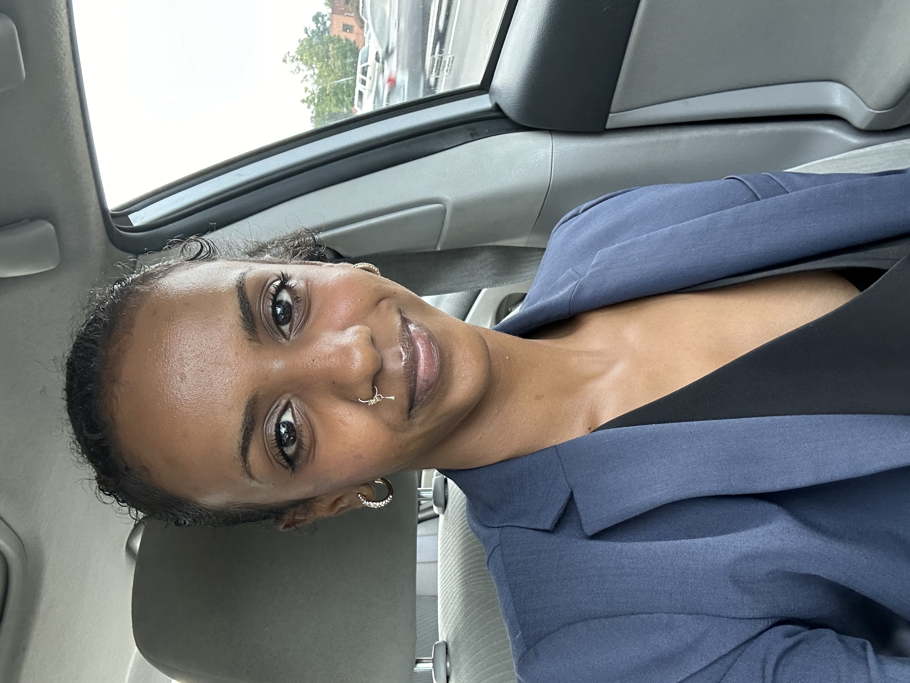

Melat Ghebru
My name is Melat Ghebru, and I recently graduated from the University of North Carolina at Charlotte with a double major in Management Information Systems and a Minor in Software Systems. With a strong foundation in business and technology, I have developed a versatile skill set that includes expertise in Java, JavaScript, HTML, CSS, SQL, Tableau, and Python, along with hands-on experience in web design and development and data analysis. During my time at UNCC, I gained valuable knowledge through coursework like Data Structures and Algorithms, Human-Centered Design, and Business Applications Development. I bring strong interpersonal and communication skills to every project I undertake. I am now seeking opportunities in the IT and Project Management fields, where I can apply my technical expertise, critical thinking abilities, and passion for technology to solve real-world problems. I am particularly excited about working on projects that integrate technology with business operations to create efficient and impactful solutions. Thank you for taking the time to learn more about me. I look forward to connecting and exploring opportunities to collaborate or contribute to your team.
